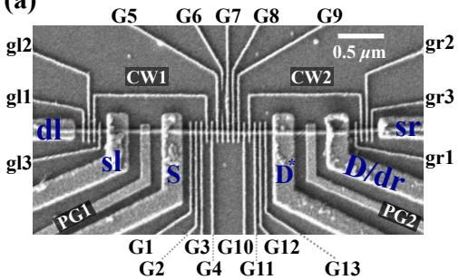
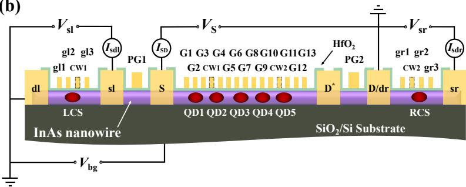

物理图像
量子点阵列（quantum dot array）是把多个半导体量子点按一维链或二维格子排列、并用栅极独立控制各点电化学势与点间隧穿耦合的器件。从单点、双量子点走向阵列时，会出现三类单点中不存在的扩展问题：
- 器件：点多了以后，每个点都必须能独立积累到少电子区，同时最近邻乃至次近邻耦合都要可调。量子点越小（Si/SiGe 中典型尺寸仅几十纳米），栅极版图和微纳加工越困难；二维阵列还会挤压电荷传感器的摆放空间，平面布线也限制了引线数量。
- 控制：每个栅极通过寄生电容同时影响多个量子点（交叉电容矩阵）， 个点的调控空间维数随点数线性增长，人工试探式调谐很快失效，必须借助虚拟电极把物理电压映射为近似独立的化学势轴和势垒轴，并进一步交给自动调控流程。
- 测量：读出线路不能随比特数线性膨胀。常见做法是在阵列边缘布置少量电荷传感器（QPC 电荷传感或 SET），配合射频反射测量复用，或者让比特通过共享腔模间接耦合与读出。
回报是双重的：阵列既能编码多个自旋量子比特（每个点一个单自旋量子比特，相邻点间以交换相互作用做两比特门），其”格点 + 隧穿 + 在位排斥”的结构又天然是一台 Hubbard 模型的模拟型量子模拟器（analog quantum simulator）。
理论模型：扩展 Fermi–Hubbard 模型
对多点系统，常相互作用模型本质上是经典电路模型，随点数增加迅速变得繁琐，且无法描述点间隧穿引起的能级杂化。更合适的出发点是费米–哈伯德模型（Fermi–Hubbard model）。单轨道、半满填充的标准 Hubbard 哈密顿量为
其中 遍历最近邻格点， 是格点间隧穿能， 是同一格点双占据的库仑能，、 是格点 上自旋 电子的产生、湮灭算符，。动能项（）使电子离域，排斥项（）使电子局域，两者竞争决定基态性质： 时电子被局域在各格点上，体系是莫特绝缘体（Mott insulator）； 时电子自由移动，体系呈金属性。半满单带情形下，自由电子模型给出 Hubbard 带宽 （ 为维度），当 超过临界值 时体系劈裂出上、下 Hubbard 带，带间距离即莫特间隙（Mott gap）。
量子点阵列并不严格等同于纯净 Hubbard 模型——各点电化学势 可由栅极独立调节，点间还存在长程库仑相互作用 ——因此实际描述用扩展 Fermi–Hubbard 模型。对含最近邻隧穿 与次近邻隧穿 的二维阵列（如 2×2 阵列）：
其中 表示次近邻格点对， 即各点的充电能。模型参数与旋钮一一对应： 由能级栅（plunger）设定，、 由势垒栅设定， 主要由点尺寸决定、近似固定， 随点间距衰减。与常相互作用模型相比，它能定量再现电荷稳定图中点间隧穿线的弯曲（能级杂化），这是纯静电模型做不到的。量子点阵列模拟 Hubbard 模型的想法最早由 Stafford 与 Das Sarma 于 1994 年提出，目标正是研究强关联体系的多体物理——莫特转变。相互作用谱系再往强关联端走一格：单点内 类比量（密度降低、 增大）足够大时，电子在点内自组织为空间分立构型——即Wigner 分子；Hubbard 图像与 Wigner 图像的分界是阵列模拟与单点多体物理共享的判据问题。
强耦合极限：从 Hubbard 到 Heisenberg
当 且每点近似单占据时，双占据态被投影掉，二阶微扰把 Hubbard 模型约化为海森堡自旋模型。对双点（失谐 ，两点塞曼能差 ），交换耦合为
在 时退化为熟悉的 。这正是阵列中相邻自旋比特两比特门的微观来源，也说明”量子模拟”与”量子计算”两种用途共享同一套器件参数。
可解性与量子模拟的意义
一维 Hubbard 模型可用 Bethe 拟设（Bethe ansatz）严格求解，二维及以上没有解析解，且格点数增加时希尔伯特空间指数膨胀，经典数值方法很快失效。这正是用量子点阵列做模拟型量子模拟的动机：与其在经典计算机上求解，不如直接制备一个服从同一哈密顿量的人工晶格并测量它的演化。
参数与量级
以下数值取自 Si/SiGe 2×2 阵列与 Si/SiGe 三点–腔器件的实测：
| 量 | 典型值 | 说明 |
|---|---|---|
| 能级栅尺寸 | 2×2 阵列 plunger 栅，栅间距 45 nm | |
| 栅极层厚 | 35 / 50 / 55 / 70 nm | 屏蔽栅、能级栅、两层势垒栅（铝） |
| 杠杆臂 | 2×2 阵列四点平均；三点–腔器件中为 | |
| 单点充电能 | – | 单点模式逐点测量（表 4.1），平均 – |
| 阵列模式充电能 | 2.83 / 5.02 / 3.05 / 4.63 meV | 四点同时形成后重测；差异源于屏蔽栅的非对称静电束缚 |
| 最近邻隧穿 | 参考点 ，数十至数百 可调 | 由势垒栅独立调节 |
| 次近邻隧穿 | 30 / 130 / 280 | 由中心势垒栅 CB 调节的三个档位 |
| 点间库仑 | 最近邻 –，次近邻 | Hubbard 模拟所用参数 |
| 电子温度 | 反交叉拟合下限 |
注意充电能（meV 量级）比隧穿耦合（ 量级）大约一个数量级，阵列通常工作在 一侧；把 从接近零调到数百 ，正是扫过 的手段。
实验特征与测量
多点电荷稳定图
阵列的”相图”是 维电压空间，实验上只能取二维截面。双点相图的三相点（triple point）在三点系统中推广为四相点（quadruple point, QP）：四个电荷态同时简并、三个点的电化学势同时与源漏对齐，例如
三维相图中的四相点在二维截面里通常不可见，需要精确调节多个电极才能让两个三相点合并成四相点；因此能在二维图中找到四相点本身就是阵列可调性好的判据。三点体系还特有量子元胞自动机（quantum cellular automata, QCA）过程：如 的跃迁涉及两个电子在三个点与源漏之间的协同移动，是高阶隧穿过程。
阵列与谐振腔杂化后，相图本身也可由腔的色散读出成像：论文用高阻抗谐振腔的相位响应直接测出三点电荷稳定图与四相点，并用 Hubbard 模型结合输入–输出理论再现了四相点附近的腔相位响应。
虚拟电极与同步扫描
抑制交叉电容的标准做法是测出串扰矩阵 后作线性变换 ：虚拟电极（virtual gate）电压 的每个分量只移动对应点的电化学势，物理栅压由 组合生成。阵列中还面临各点充电能不均匀的问题：以某点充电能 为基准，把其余点的虚拟栅扫描系数取为 （如 2×2 阵列中 ），即可实现四个点均匀且同步的电子填充。再把扫描轴换成失谐轴 与能量轴 并赋予不同斜率系数，可在一张”电子填充谱”中同时区分四个点的填充过程。同样的虚拟化也可施加于势垒栅（虚拟势垒栅极）以独立调节各条 。
需要注意的是，虚拟栅极是线性近似：随着隧穿耦合调强，点的电势分布本身发生改变，原有串扰矩阵的有效性逐渐降低，必须重新测量串扰并更新矩阵，否则”独立控制”会再次退化。
集体库仑阻塞：有限尺寸的莫特转变
把 2×2 阵列的四个最近邻隧穿耦合同步调大，电子填充谱依次呈现三个区域：
- 弱耦合（）：填充谱是四个近似孤立单点的库仑阻塞的叠加，四种斜率的隧穿线清晰可分，电子局域——类似绝缘体；
- 中等耦合：单点特征消失，隧穿线交叉处弯曲杂化，能级简并解除并展宽成”微带”（有限尺寸下的能带类比）。填充谱中出现上、下 Hubbard 微带与两者之间的类莫特能隙——系统进入由强关联主导的集体库仑阻塞（collective Coulomb blockade, CCB）区，即莫特绝缘态的有限尺寸对应；
- 强耦合：微带与能隙闭合，填充谱退化为一个”大量子点”的库仑阻塞。实验提取的大点充电能 1.05 meV 与自电容模型按阵列核心尺寸（约 190 nm × 220 nm）估算的 1.68 meV 同量级，且改变部分点的电化学势不再移动填充线，说明电子已完全离域——类似金属。
这一”CCB 出现再消失”的过程就是莫特绝缘体–金属转变的有限尺寸模拟，两种测量手段（电荷感应填充谱与输运库仑菱形）结果一致，并与二维扩展 Fermi–Hubbard 模型的数值模拟相符。
自动调控
点数增多后人工调谐不可持续。自动调控方案把多点系统划分为双点重复单元：先用卷积神经网络识别相图完成一对双点的少电子区定位与耦合调节，建立该双点的虚拟电极；再加入一个新点构成新双点，已调好的点在虚拟电极保护下不受影响。如此按 QD1→QD2→QD3→QD4 遍历阵列，最终所有点都处于耦合适中的少电子区。双点规模的自动调控（少电子区定位 + 耦合判定）准确度可达 90% 上下，单步 CNN 判定耗时不到半分钟，相比人工的”试探–扫描”有明确的速度优势。
阵列能做什么
- 多比特处理器：一维阵列已实现 GaAs 8 点、Si/SiGe 6、9 乃至 12 点；二维方向已演示 2×2、3×3 乃至 10 点器件（Ge/SiGe 与掺杂磷体系）。基于一维 Si/SiGe 四点阵列，论文实现了单比特门保真度超过 99.9%、两比特门超过 99% 的通用门操控与贝尔态制备；三个点还可直接编码全电学的共振交换量子比特。
- 量子模拟器：除上述 CCB/莫特转变实验外，同类 2×2 阵列还观察过 Nagaoka 铁磁性；引入可控次近邻耦合 后，可模拟阻挫磁体、自旋液体乃至与高温超导相关的强关联相——这正是二维阵列相对一维链的独特价值。
- 长程耦合总线的最小单元：三量子点加高阻抗谐振腔是”比特阵列 × 光子总线”的最小构型：两个点各编码一个比特、第三点作耦合中介，即可验证阵列经腔模实现长程自旋–光子耦合的原理。
一维阵列+集成传感器（InAs 纳米线五点阵）：与二维阵列（词条主数据）对照的一维构型——五量子点+两个集成电荷传感器，双量子点沿阵列逐段表征。一维的隧道输运链是量子点中继/梭运（对照频率均匀化的输送模式）的基础构型；硅 9 点阵列上的 bucket-brigade电荷穿梭（单电子 ~50 ns 穿越全阵列、 泵浦电流定量验证）给出了一维输运链的定量基准。

InAs 一维五点阵+双传感器：沿阵列逐段表征双量子点——一维构型的阵列基础。图源：arXiv:2407.15534，Fig. 1。

阵列的电荷传感表征：双传感器同时监测沿阵列的双点。图源：arXiv:2407.15534，Fig. 2。
与其他概念的关系
- 单点的库仑阻塞与充电能是阵列一切标定的出发点；阵列模式下 的不均匀性正是需要”归一化”扫描系数的原因。
- 虚拟电极与交叉电容矩阵解决”控不动”的问题，自动调控解决”调不完”的问题；二维特有的版图与次近邻耦合问题见二维量子点阵列。
- 阵列也是材料均匀性的量具：Intel Tunnel Falls 一维阵列上 21 个点的谷劈裂统计与跨栅关联（见谷劈裂词条”介观关联”一节）给出了含 Ge 量子阱介观均匀性的首批数据。
- 点间隧穿耦合 一头连着 Hubbard 模型的动能项，一头连着强耦合极限下的交换相互作用 。
- 阵列态的感知依赖电荷传感器与射频反射测量的复用；与腔模杂化后则进入电路量子电动力学范畴。
- 器件材料背景见Si/SiGe 异质结。
参考文献
- 大规模阵列与处理器的代表性演示：Philips et al., Nature 609, 919 (2022)、Xue et al., Nature 601, 343 (2022)、Hendrickx et al., Nature 591, 580 (2021)。
完整文献库（含各篇站内全文页）见 参考文献库。